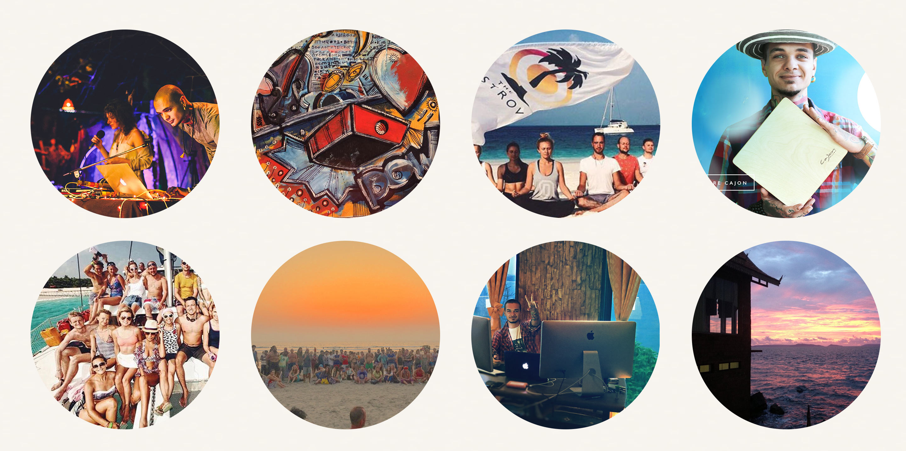
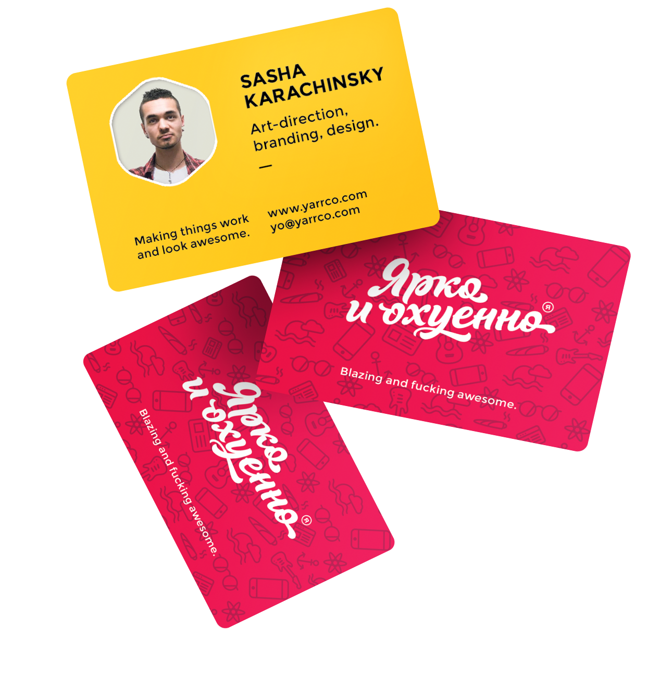
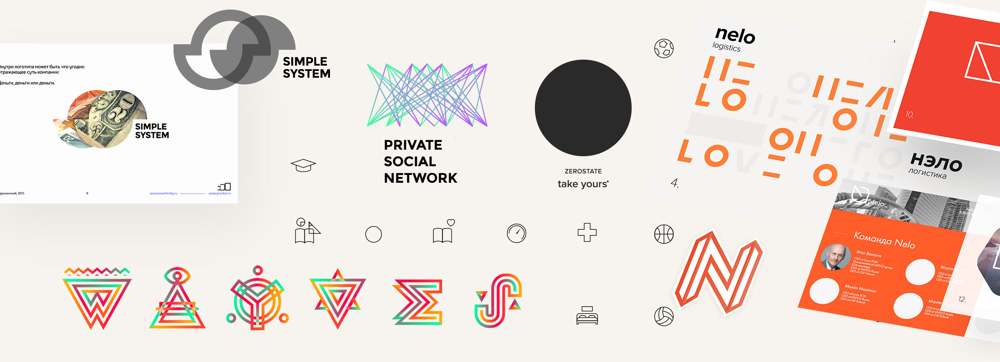

About
freelance
Since 2012 I have been working 8-10 times less than an average designer in an office, while still managing to do about 5 projects a month. And all this while maintaining an average Moscow income.
This text does not claim to be an original discovery. All this—personal experience and subjective observations.
Conclusions
1
Do so well that the customer is genuinely happy with the result and wants to tell their friends—your potential customers about it. This "trick" slowly becomes a habit, but it makes a qualitative difference forever.2
Do so well that you are genuinely satisfied yourself: feeling satisfied with the work done and proud of it—all this gives the strongest motivation and inspiration.3
Propose both conservative and innovative solutions—there's always a chance to run into a customer who is open to experimentation. This type of interaction greatly develops professional skills.4
It's worthwhile to think beyond design. Use experience from related fields. High fashion, abstract painting, digital art, glossy magazines—such sources are incredibly inspiring (especially for bold solutions).5
Any decision in the process must be adequately reasoned. Ideally by both parties.6
Keeping your word. It's simple here. It's valued. There's not enough of that in the world. Good pace forecasting is just as important. It requires knowing your resources well and always calculating the risks—being responsible is profitable.7
Interesting tasks are interesting to solve. Any task can be made interesting. Improve something, find an alternative solution, combine the incompatible, play on the contrast, appropriate use of humor, and so on.8
Always take on difficult and obscure projects. This is the best way to stay on track and evolve. For such projects, of course, it is worth laying additional deadlines and backed up by specialists you know. I note that this approach has never failed me.While working 1—2 hours a day, suddenly you realize how many interesting things you can do: travel (or just live in any country), read a lot, or compose music, for example:
In general, a major resource—time is freed up.
Then the new way of life begins to pay off: the approach to work changes qualitatively. In addition to the logical-technical side and trending techniques, there is a whole conceptual approach. The work becomes much more interesting and, in general, the need for any additional motivation disappears.

More observations
1. Less of a formal tone, preferably friendly, "on your own" if possible. Less corporate ethics and formality. In short, normal communication enhances the quality of work processes.
2. Improve the project even if no one needs it anymore. The customer always welcomes the extra attention and service.
3. To always be in touch. Powerbank, roaming, second SIM card. I also usually warn clients with whom I have active projects about upcoming flights or adventures in areas with poor connectivity. Everyone likes it.
Self-organization
1. Never put anything off.
2. Don't spend time on the only one project—do several different things in a day, change the type of activity. It allows you to get noticeably less tired. First of all emotionally. Besides, ideas from one field often inspire interesting solutions in the other one.
3. To arrange a "Mobile Detox" for yourself. This is Dima and Katya's term from OJ. The point is to stay out of touch for a while. A day or two between projects, on weekends. A mobile detox of several weeks—already a more serious practice, which also has a very positive effect on creativity.
4. Backups of everything and everything. This is simple: the "WORK" folder is in the cloud (I use Dropbox, Yandex.Drive and Google.Drive). The services are inexpensive, a good night's sleep—priceless. A couple more external hard drives just in case.

What's changed from the beginning of freelancing to now
Then
First, I enjoyed being able to wake up at noon.
Now
Now I enjoy going to bed before midnight, getting up at 7, and not using the alarm clock.
I used to take on all sorts of things: printing, outdoor, online stores, random logos. And I dreamed of doing branding.
Now I'm happily taking advantage of a variety of past experiences. And I still take on everything new and obscure with great interest. But brandig prevails.
Experiments
This part—is peculiar. Let me explain: at some point I wanted to add recognition, memeticism, and familiarity. So I came up with the slogan "bright and fucking", ordered calligraphy and printed a run of business cards. The effect was unexpected and wonderful: now many of my clients often quote this slogan on occasion. It's nice.

The slogan doesn't embarrass the big Moscow City companies, much less the small startups—we speak the same language as them. On the other hand, I don't know how many clients left the site or threw away the business card with disdain. Either way, take it easy. Snobbery complicates things.

Presentation
I love going to offices—live interaction brings me a lot of pleasure. I once had to learn to do this: read books about communication and gain experience in a business environment. This skill is universal and applicable everywhere. Being able to talk—is great.
How you present your work is especially important. In 90% of cases I create a PDF presentation explaining my logic, my creative search process. This way it is easier for the customer to feel the logo. When it comes to sites and apps—mockups, previews of interface animations—these are all standard methods of presenting my work.
I'm not a programmer, but I know HTML, CSS, and JS at a basic level. This is important in terms of communicating with developers. I speak a little of their language, understand their work, and am generally able to create designs that meet their technical requirements better. Importantly, this reduces the amount of time I spend interacting with developers, and I can go out for tea happy.
The important detail—understanding the direct link between the quality of the work you do (level of service provided) and how much you earn. If you work better, you get more. You do quality work and do a little more than agreed—create a positive relationship with the client for the future. It works very quickly.

Communication
With many customers we become real friends, which for example led me to an exciting project #TheOstrov, I flew to Solovki and almost forgot about looking for orders.Formalism disappears and work processes become noticeably faster, more elegant and pleasant.
In short, just pluses.
Reputation, approach
Transparent and clear interaction with clients. This is Facebook correspondence, if I'm in Moscow—you can meet and have a coffee. Clear scheme of work: 50% prepayment, three attempts to "start from scratch" and manifestation (this is about 6% of cases). As a result, satisfied and regular customers keep the word of mouth. And new clients come already predisposed to positive communication.Freedom
Macbook and iPhone in modem mode—fly to any country and live there as long as you want, do whatever you want: sleep for days, not sleep at all, meditate in the mountains or hang out on the beaches. As long as you're sure you'll meet your deadline. And I'm always 100 percent sure of that. I always lay down maximum risk.Love and self-actualization
Oddly enough, this approach has ended up giving me a deep appreciation for what I reverently love about my work: the knowledge it brings me, the experience that I can easily apply to my regular life, the joy of being able to create beautiful things.A little clarification
In 6 years of freelancing, I moved to an office for 2 months once and it was even more free and crazy than freelancing (hello, ZeroState). In the second case, it was Polonsky Island, which is also more of an adventure than a job.
That's pretty much it.
All of the thoughts in this text are very simple, but nevertheless, for me, their value is obvious. It's a simple set of rules that allow me to do the work I love, make good money, and spend very little time doing it.
You can re-read the conclusions.
* * *
If we have the same views and approach to work and you need to design something—you know what to do: